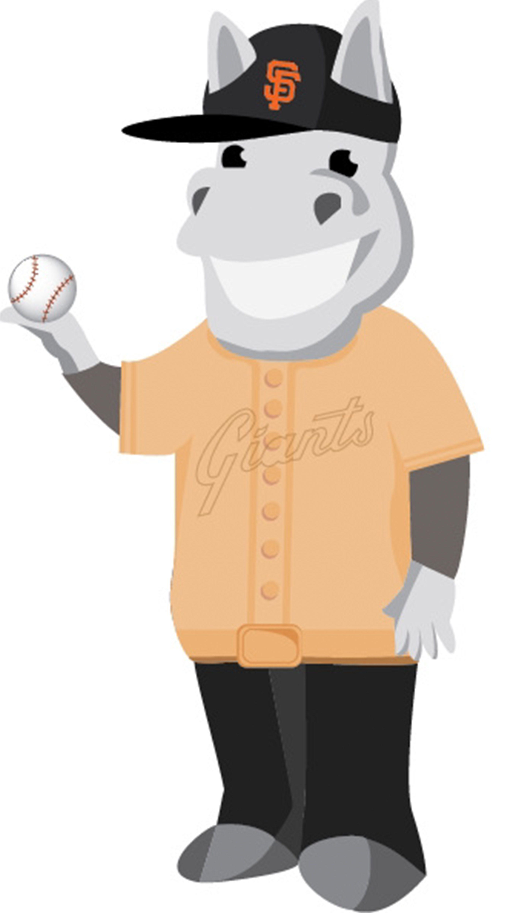
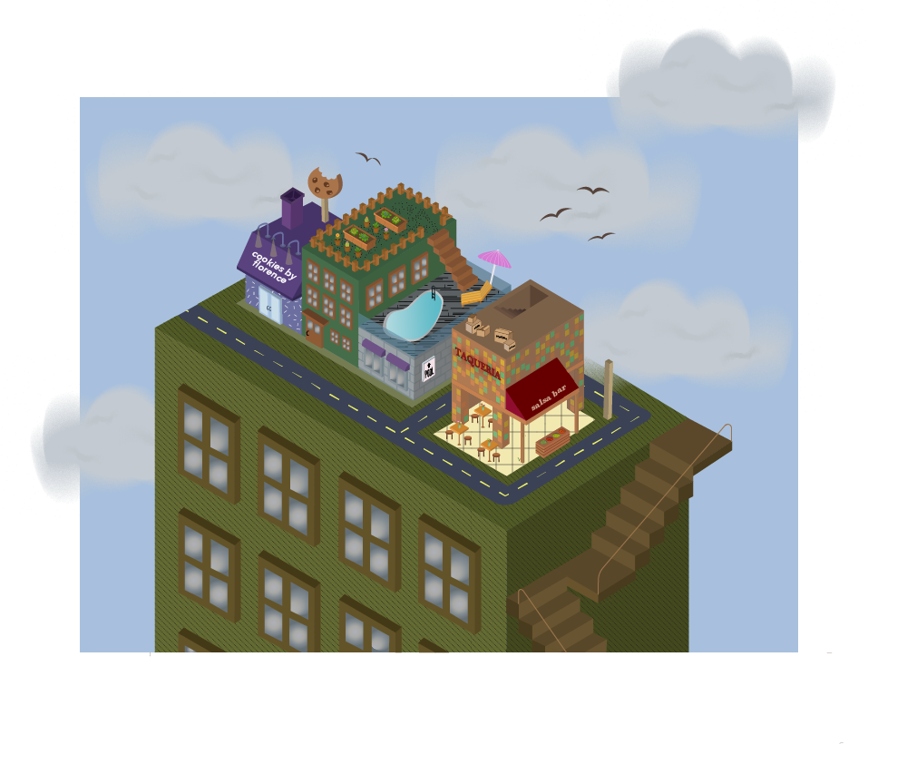
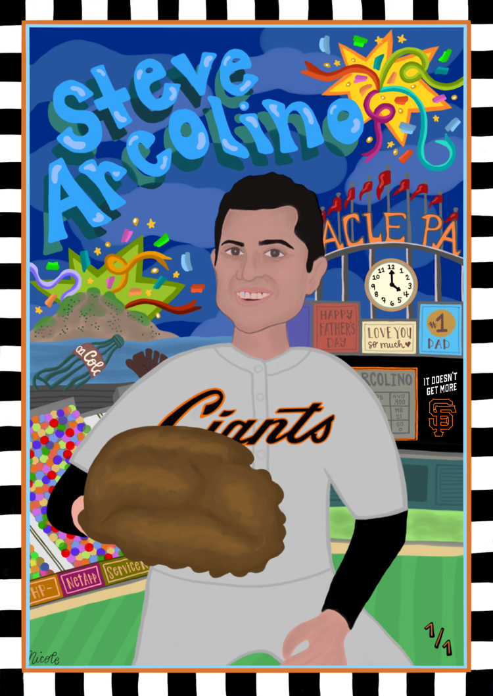
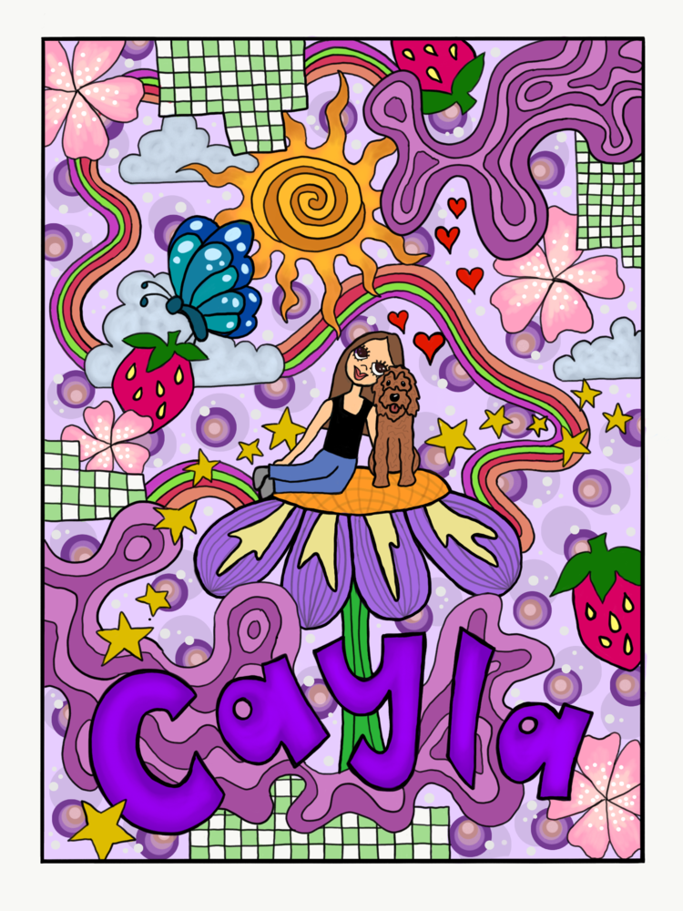
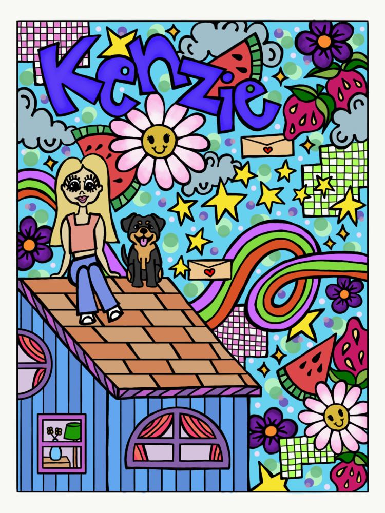
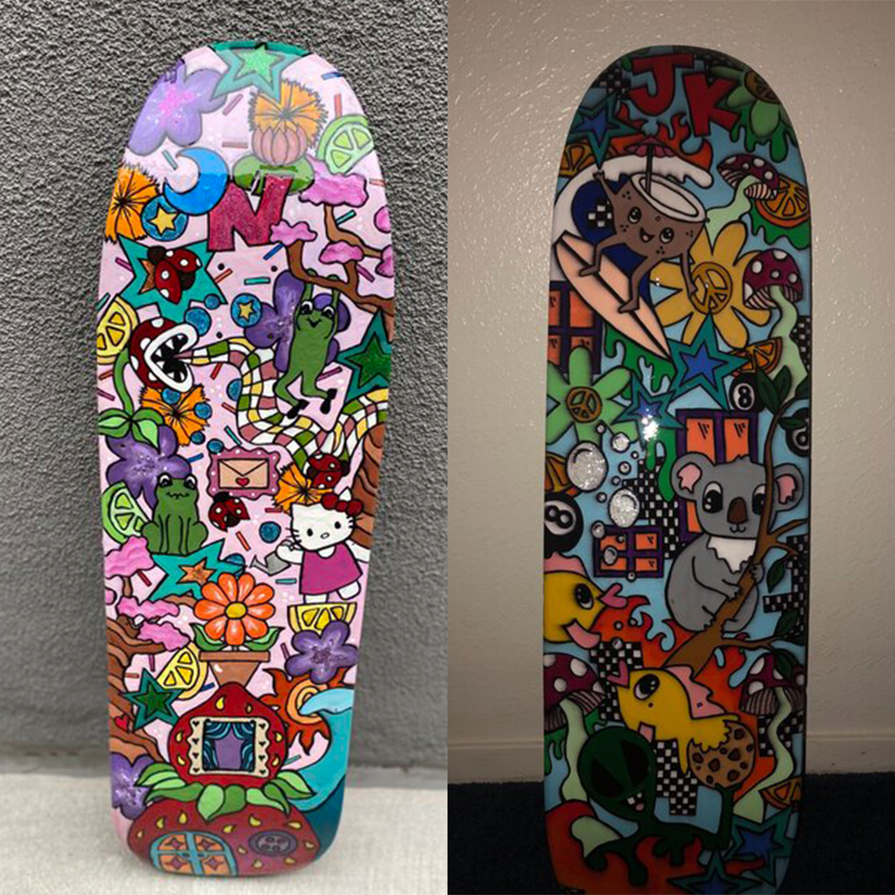
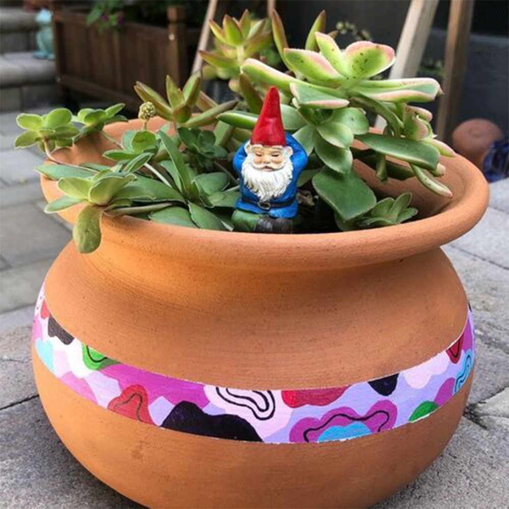

Digital Art
Here are some digtal art pieces I have created, using Adobe Creative Studios.
Caricature Re-Designs
One thing I love is re-designing logos and caricatures. I recently re-designed the Salesforce MuleSoft mascot,
Max the Mule, on Adobe Illustrator. I illustrated him in a baseball uniform for the SF Giants. My sister loves the video game,
Animal Crossing. For her birthday, I illustrated her avatar and printed it out for the perfect wall art. This was also created on
Adobe Illustrator.

More Adobe Illustrator and Photoshop
As a part of an interdisciplinary degree program, I have the ability to study a Liberal Arts concentration of my choice.
I was immediately drawn to Graphic Design, and Publishing Technology in specific. This past year, I have been able to expand my
knowledge on different creative applications, such as Adobe Illustrator, Photoshop, InDesign, and Premiere. Having the experience with
Adobe Creative Cloud allows me to learn more about computers from a design perspective.


Personalized Artwork
My favorite way to show my gratitude for family and friends is to make them a personlized piece of art.
I usually ask them what their favorite colors, or foods are, and include them in a cartoon-y sketch. My dad is an avid
baseball card collector, so I thought it was a great idea to make him his very own. All illustrations were made on
Adobe Fresco: previously known as Adobe Sketch.



Designs on Other Mediums
Before I began exploring the realms of digital art, I enjoyed acrylic painting. Today, I utilize my free time
to create art on all different kinds of mediums: recycled skateboard decks, flower pots, and mugs.
I like being able to see something I have created on something other than a computer screen.

